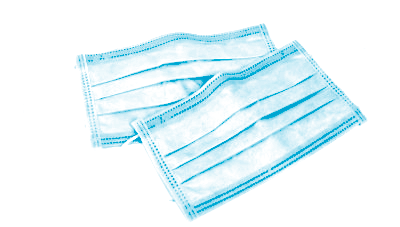
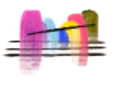
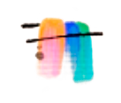

2012
Cofounds Accurat and starts PHD in communication design.
Moves to New York from Italy.

2015
Completes Dear Data project with Stephanie Posavec.


2017
First Ted Talk on data humanism philosophy.

2018
Named one of the “100 Most Creative People in Business.
2019
Becomes a partner at Pentagram (first data viz-focused partner).
2020
Start of COVID-19 pandemic. Lupi gets long Covid.

2022
Wins National Communication Design Award from the Cooper Hewitt.
2024
Releases long Covid op-ed in The New York Times.

